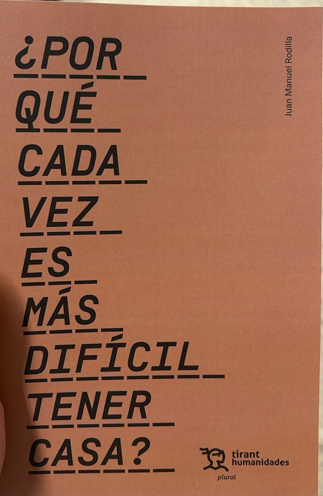

Un ensayo de Juan Manuel Rodilla sobre por qué el acceso a la vivienda en España se ha convertido en una yincana. Publicado por Tirant Humanidades, colección Plural, el 30 de octubre de 2026.
De qué va
¿Pagas demasiado por tu alquiler? ¿Conoces a alguien que no puede emanciparse? ¿Ves cada año más lejana la posibilidad de tener una casa que puedas llamar tuya? ¿Sientes que hay cada vez más personas viviendo en la calle? No es casualidad, ni mala suerte, ni fruto de una mala decisión.
Juan Manuel Rodilla explica, con rigor y sin tecnicismos, por qué el acceso a la vivienda en España se ha convertido en una auténtica yincana: viviendas vacías en manos de fondos de inversión, alquileres turísticos que reducen la oferta, escasa vivienda social y un relato interesado que lleva décadas imponiendo la construcción de nueva vivienda como única solución.
A través de anécdotas personales, datos oficiales y una perspectiva internacional comparada, el autor demuestra que lo que percibimos como un fallo individual tiene raíces profundamente estructurales. Y que existen soluciones, aunque no sean las que nos han estado vendiendo.
Un ensayo tan didáctico como incendiario, pensado para quien quiere entender de una vez por qué cada vez es más difícil tener casa, y qué podemos exigir para cambiarlo.
Texto de la ficha del libro en la web de la editorial.
El autor
Juan Manuel Rodilla.
La editorial no publica una biografía del autor; en su catálogo consta únicamente este título. El libro parte de anécdotas personales, datos oficiales y una perspectiva internacional comparada.
La cubierta
La identidad gráfica, del estudio valenciano ALTRE, parte de dos elementos de la experiencia del sinhogarismo: la caja de cartón y el adoquinado del suelo público. Los subrayados discontinuos obligan a las letras a moverse y separarse por encima de ellos, y la paleta de grises y marrones remite a esos mismos elementos cotidianos.
Según la descripción del proyecto en altrestudi.com.

Ficha
- Autor
- Juan Manuel Rodilla
- Editorial
- Tirant Humanidades (Tirant lo Blanch)
- Colección
- Plural
- Edición
- 1.ª, 30 de octubre de 2026
- Formato
- Rústica, 202 páginas, castellano
- ISBN papel
- 9791370383923
- ISBN ebook
- 9791370383930
Comprar
17,00 € (PVP 17,90 €, −5 % en la web de la editorial)
En stock, con entrega en 24-48 h. También en ebook por 11,00 €.